Information Density
Dense operational data competed for attention, making key information harder to scan
A visual redesign of Mero Billing’s desktop interface, focused on refining the visual system, screen layouts and reusable UI components while preserving the existing navigation, content and business logic.

Mero Billing is a desktop-based business management and accounting platform that brings core business operations into one platform, including sales, purchases, inventory, accounting, point of sale (POS), and reporting.
I redesigned the visual presentation of the existing interface across key modules, refining colors, typography, spacing, buttons, form fields, tables and other UI components while retaining the existing content, navigation and information hierarchy.
The goal was to create a more cohesive and consistent interface through a refined visual system, clearer component styling, and more considered spacing and layout.
Visual redesign of the existing desktop interface across all Mero Billing modules.
Existing product functionality, business logic, navigation content and information hierarchy were retained
Dense operational data competed for attention, making key information harder to scan
Layout and interaction patterns varied across modules, making similar tasks feel less predictable
Primary and secondary actions lacked clear visual distinction, making important actions harder to identify
I approached the redesign at both screen and product levels, improving individual interfaces while maintaining consistency across Mero Billing’s modules.
MeroBilling's existing navigation and module structure were retained during the redesign. The work focused on improving the visual presentation of the existing product rather than changing its information architecture.

A shared visual foundation of color, typography, iconography, and reusable components to support consistency across the redesigned screens.

Roboto Mono was used throughout the interface to establish a clear typographic hierarchy and maintain readability across headings, labels, tables, and body text.

Outline icons from Iconify were selected to support quick recognition of key actions. A consistent size, stroke weight, and alignment keep them uniform across the interface.
| Property | Example |
|---|---|
| Icon Source | Iconify |
| Standard Size | 24 × 24 px |
| Stroke Weight | 2 px |
| Alignment | Center-aligned |
| Style | Outline |
I created reusable components for the desktop application, including the navbar, buttons in multiple sizes and states, table cells, text fields, popup fields, filters, and pagination, to keep modules consistent.

The original Mero Billing dashboard offered only a welcome card and a sign out button on an otherwise empty page. Working with my mentor, I redesigned it with a green colour scheme, a company and fiscal year bar, and updated Master and Reports menu labels. I also added quick actions, an income versus expenses chart, bank details and key totals for sales, purchases, receivables and payables, so users get a clear snapshot as soon as they log in.
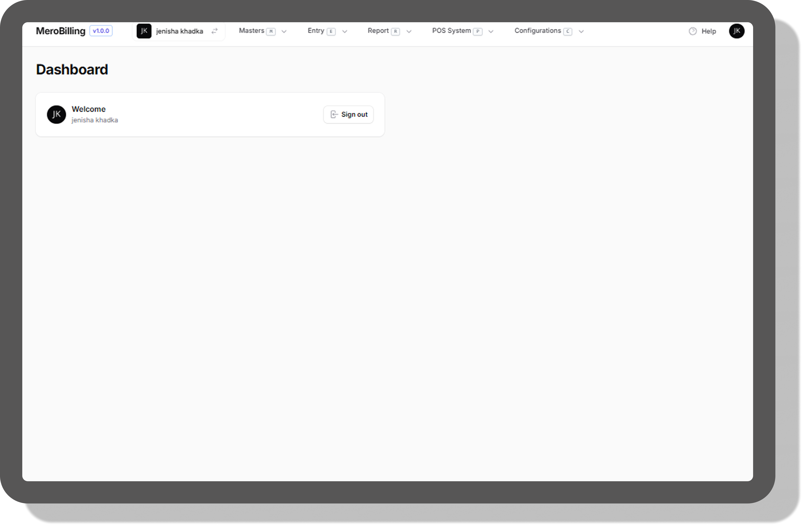
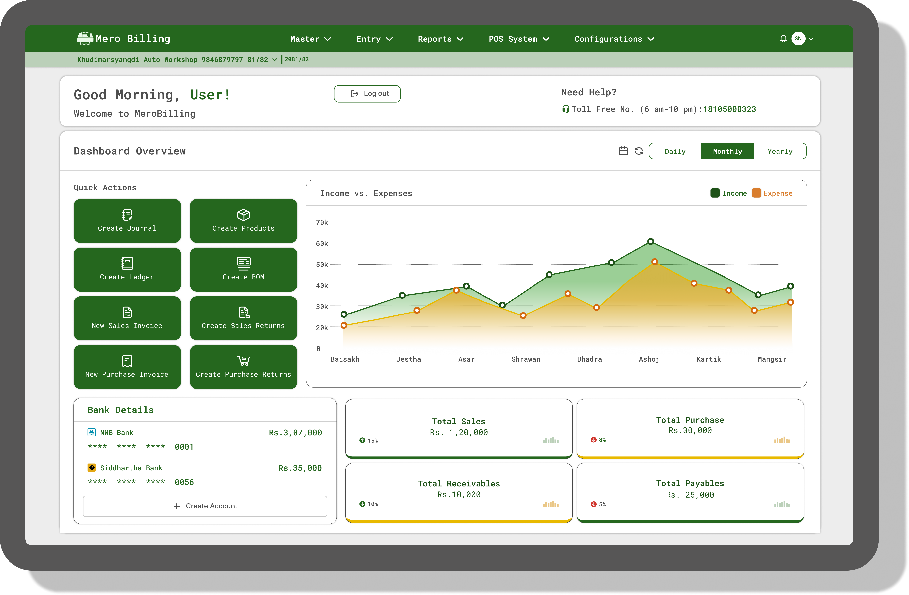
The dashboard brings quick actions, an income versus expenses chart, bank details and key totals for sales, purchases, receivables and payables onto one screen, with Daily, Monthly and Yearly views.
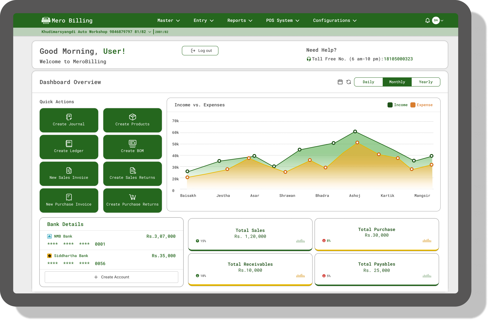
Account groups are listed in a structured table with schedule range, type, sub type and ledger count. Search, row actions for edit and delete, pagination and a per-page selector keep large lists manageable.
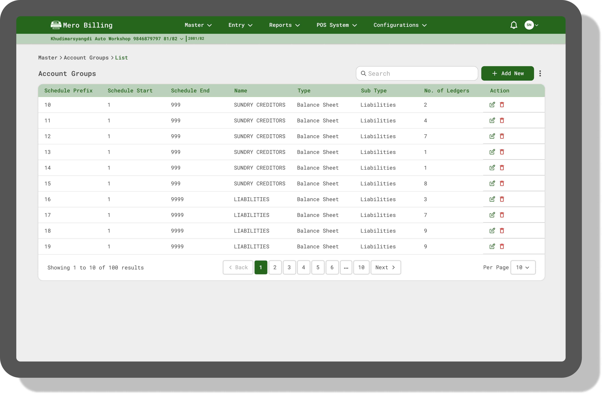
Purchase orders are listed with order number, Miti and English dates, quotation, ledger and total quantity. Search, an Add New button, pagination and a per-page selector keep long lists easy to scan.
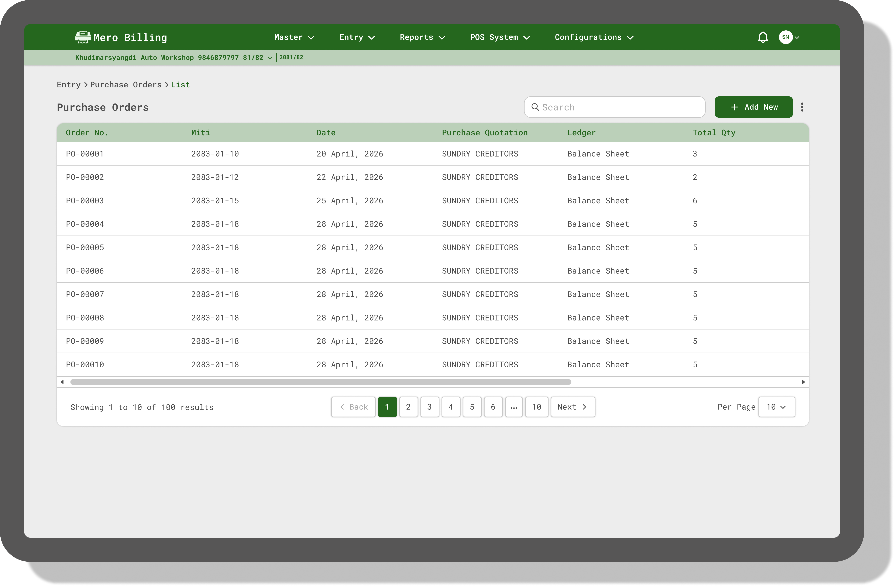
The cash flow report combines a date and Miti filter panel with a report card showing inflow, outflow and running balance, plus net change, totals and PDF or Excel export.
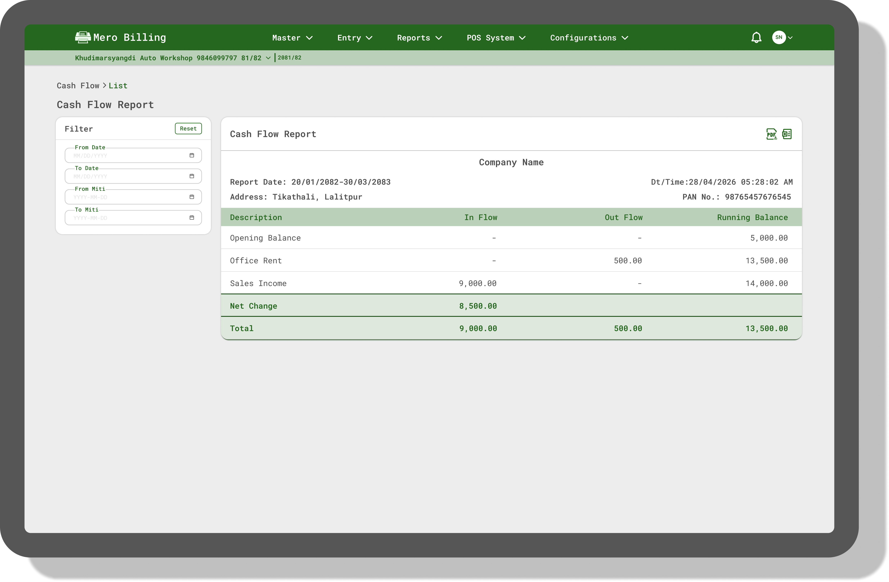
The POS screen is designed for fast counter sales, with a cart summary, a calculator keypad and shortcuts for promos, coupons, overrides and inquiries. The top bar shows the terminal, associate and shift, with options to hold a transaction or close the shift.

Edit Configuration groups the accounting defaults into sections for sales, purchase, finance and inventory, cancellations and additional settings. Users can assign ledgers, switch options such as Last Sales Rate on or off, and choose the date format and currency.
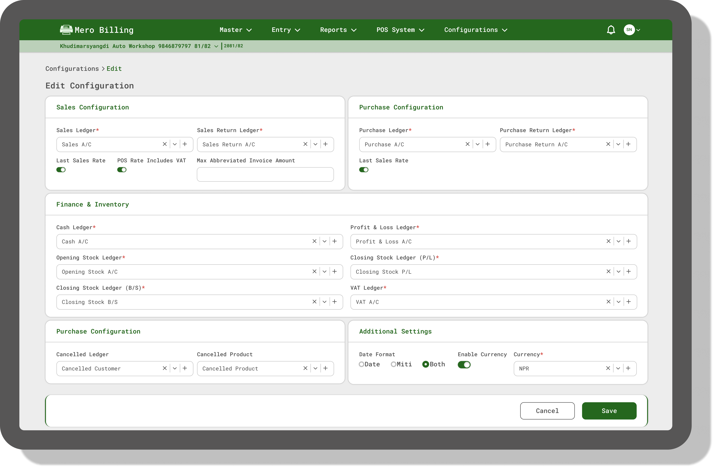
Five design decisions guided the redesign of Mero Billing’s desktop experience: dashboard hierarchy, information density, product navigation, and consistent interaction patterns.

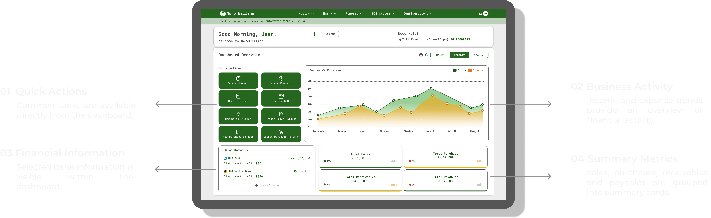
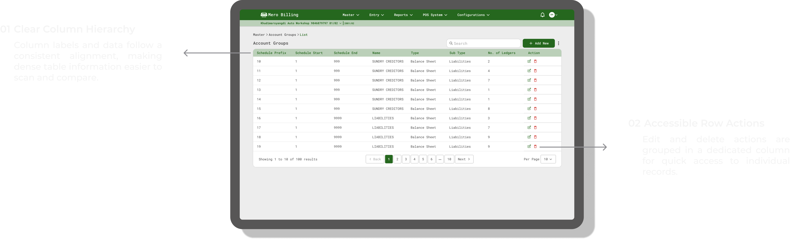
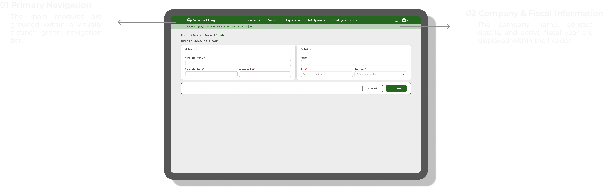
Shared table layouts, search placement, row actions and pagination create a consistent pattern across the redesigned modules.
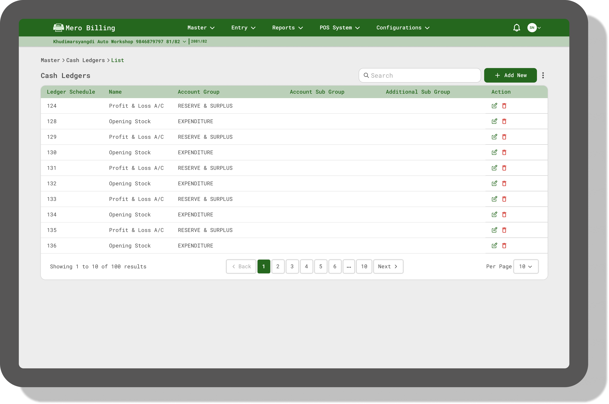
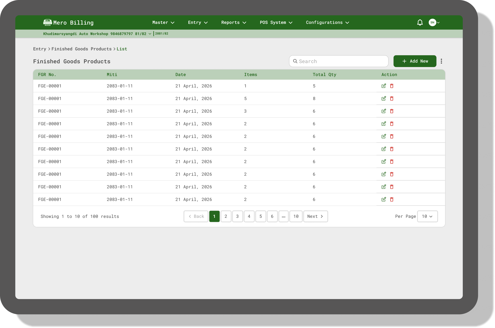
Consistent form layouts and action placement create a predictable visual pattern across the redesigned workflows.
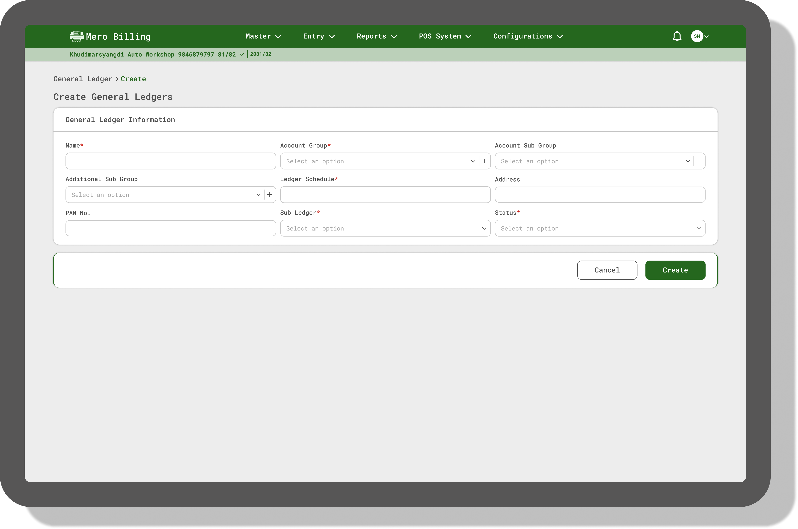
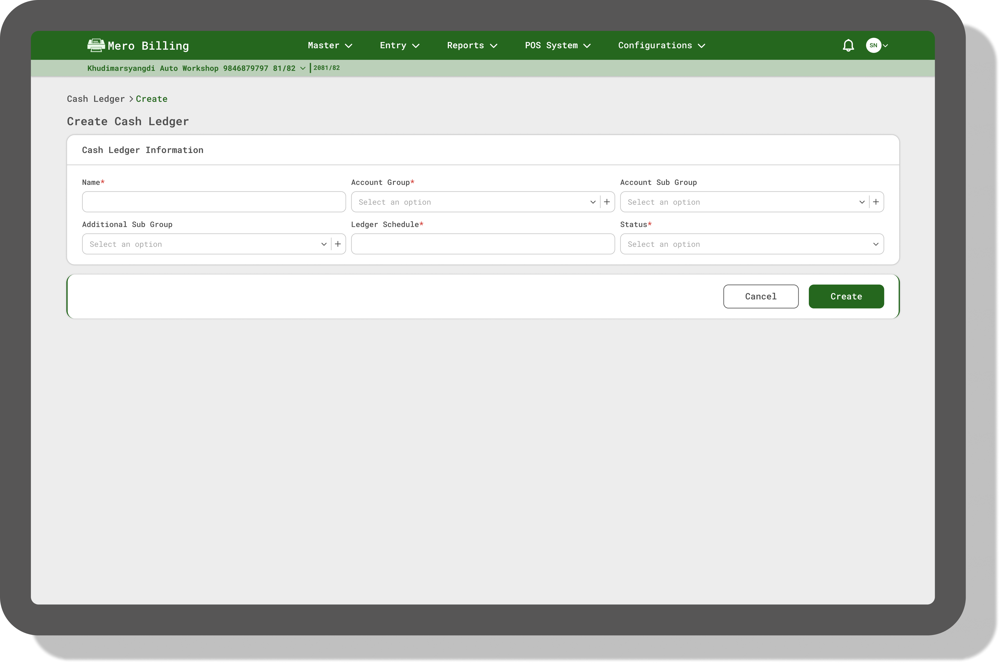
The redesign established clearer information hierarchy, reusable interaction patterns, and a more consistent visual foundation across key areas of Mero Billing.
Grouped related information and emphasized key actions to create clearer visual priorities across the redesigned interfaces.
Applied shared patterns for tables, forms, search, filters, and pagination across the redesigned modules.
Used available dashboard space to surface key business information and frequently used actions.
Aligned typography, spacing and component styling across the redesigned interface.
This project strengthened my ability to refine a complex, data-heavy business application through a consistent visual system while working within its existing structure and functionality.